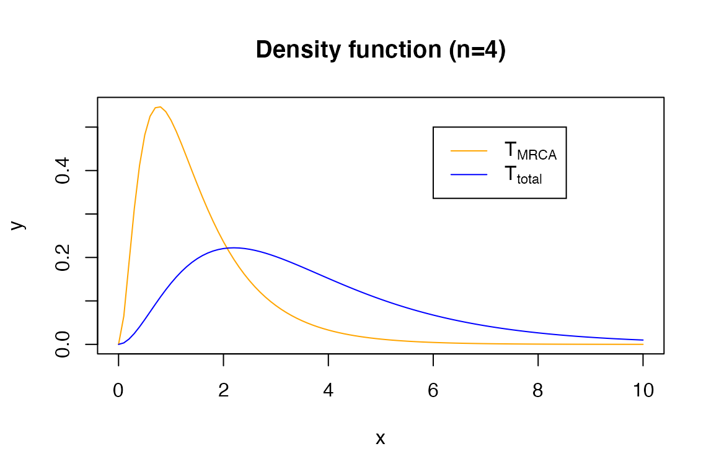
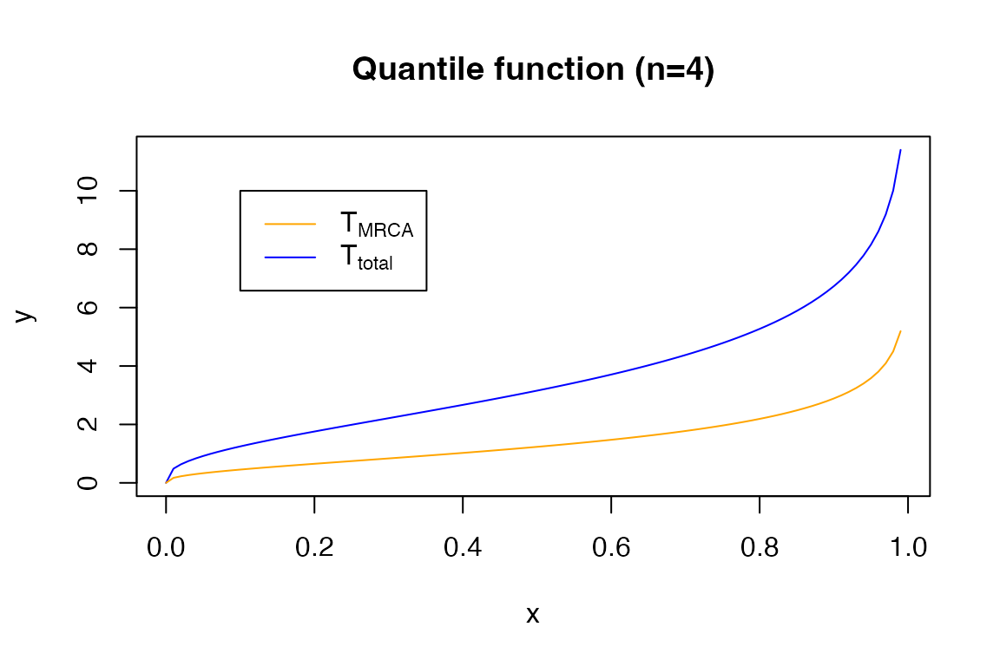
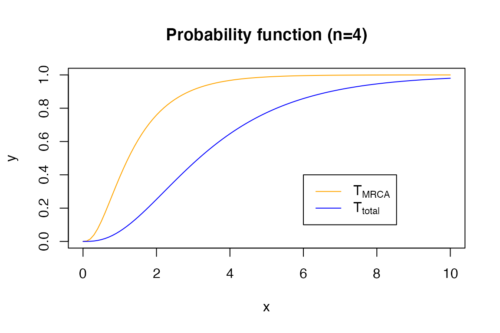
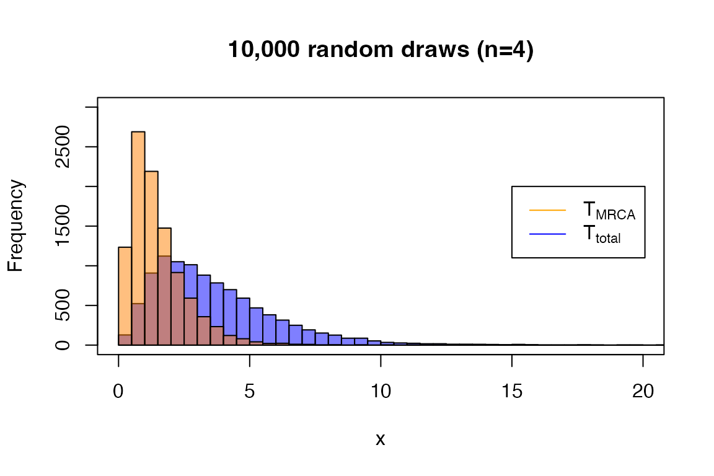
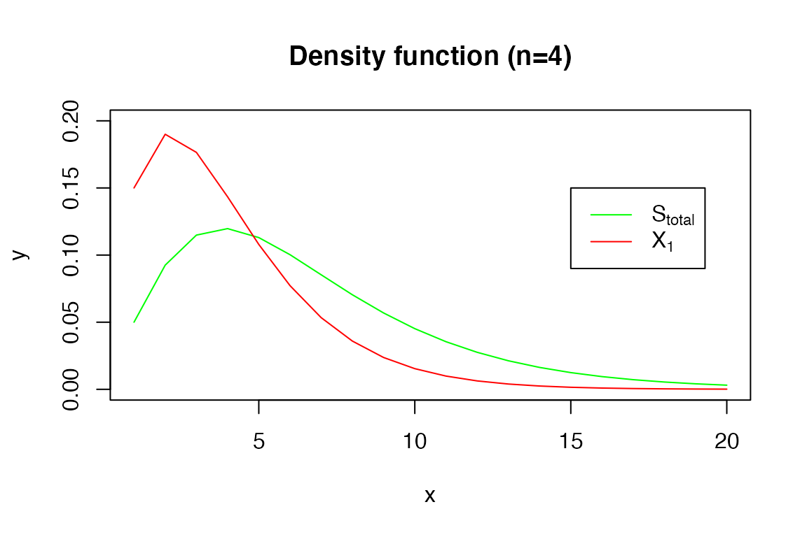
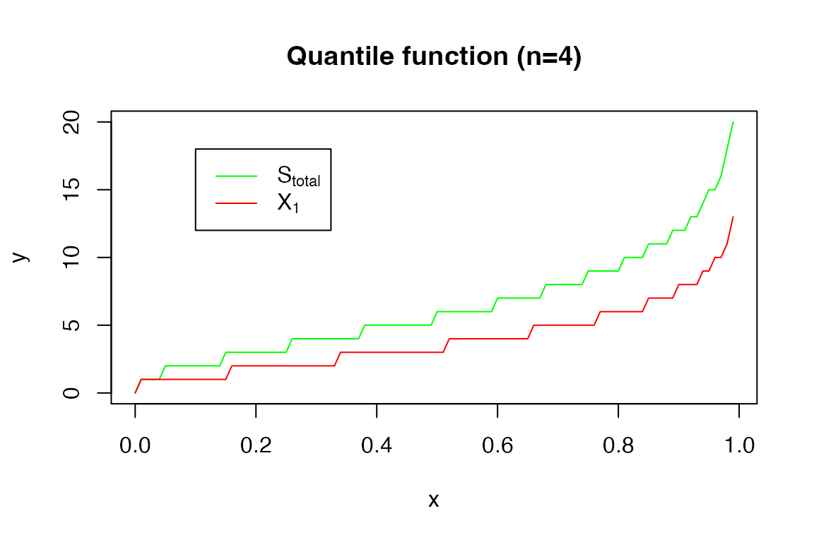
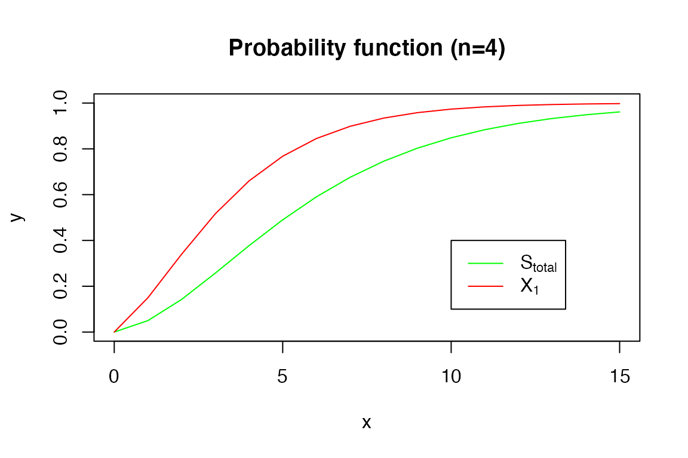
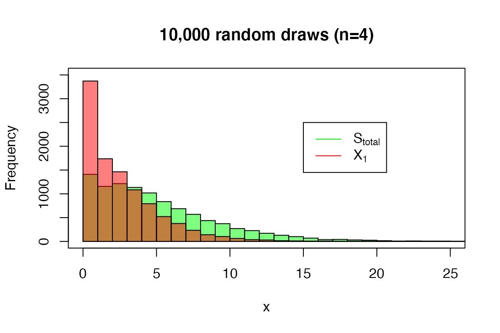

vignettes/a2_pop_gen_iker.Rmd
a2_pop_gen_iker.RmdPhaseTypeR is a flexible and efficient package for using phase-type theory in R. This vignette describes how to use the general-purpose phase-type functions for modeling common statistics in population genomics at the finest level. The formulation of general phase-type theory can be consulted in Bladt and Nielsen’s ‘Matrix-Exponential Distributions in Applied Probability’ (Bladt and Nielsen 2017), and the notation for this vignette is also adopted from this book. On the other hand, the theory behind applying phase-type theory in population genomics is based on Hobolth et al. (2019).
Do not hesitate to run ?PhaseTypeR for a quick summary of the available general-purpose functions, or to open the help files for the individual functions.
In an evolutionary tree the time until two sequences coalesce \(T_i\) can be measured in number of generations \(R_i\) divided by the population size \(N\), this is, \(T_i=R_i/N\). \(T_i\) can easily be proven to approximate to an exponential distribution with rate \(\binom{i}{2}\) (Kingman 1982).
In order to understand the evolutionary history of sequences two additional quantities can be defined –namely the time until the most recent common ancestor \(T_{MRCA}\) and the total tree length \(T_{Total}\). \(T_{MRCA}\) will simply be the sum of all times until two sequences coalesce, in other words \(T_{MRCA}=T_n+T_{n-1}+...+T_2\), where \(T_i\sim\text{exp}(\binom{i}{2})\). \(T_{Total}\), on the other hand, takes into account the length of all possible branches, so \(T_{Total}=nT_n+(n-1)T_{n-1}+...+2T_2\) and, thus, \(iT_i\sim \text{exp}(\frac{i-1}{2})\).
The mean and variance of these two quantities can be derived relatively easily. Defining their distribution, however, is more challenging since both \(T_{MRCA}\) and \(T_{Total}\) are sums of independent exponentially distributed variables with different rates. Their distribution can be computed as a series of convolutions, but their formulation, application and interpretation might be challenging for the average population geneticist.
Instead, we can think of the sum of exponential distributions as a continuous-time Markov chain, where coalescent events are represented as Markov jumps with rate \(T_i\) for \(T_{MRCA}\) and \(iT_i\) for \(T_{Total}\). The Markov chain will end with an absorbing state, which in both cases will be the MRCA.
The Markov chain can be represented using phase-type theory, where the jump rates are defined with a sub-intensity matrix \(T\) and the initial distribution will be defined as a row vector \(\pi\). If we define \(\tau\) as the smallest time (or length) to reach the absorbing state, then \(\tau\sim PH(\pi,T)\). This continuous phase-type distribution has well-documented and easy-to-implement formulas for the expectation, the variance, the survival function, the distribution function and the density function. Moreover, since both \(\pi\) and \(T\) can easily be specified, we can represent evolutionary histories that do not follow the standard coalescent model and still use the same phase-type formulas.
PhaseTypeR contains an efficient implementation of continuous phase-type distributions. This section shows how to create phase-type representations of \(T_{MRCA}\) and \(T_{Total}\) under the Kingman’s coalescent model, and it provides some guidelines for modeling these quantities for other non-standard coalescent models.
Following Hobolth et al. (2019), we can build a phase-type representation of \(T_{MRCA}\) by defining the sub-intensity matrix, which each row and column will represent the states of the coalescent process.
For example, for Kingman’s coalescent the sub-intensity matrix can be defined as:
\[ \boldsymbol{T} = \begin{bmatrix} -\binom{n}{2} & \binom{n}{2} & 0 & \cdots & 0 \\ 0 & -\binom{n-1}{2} & \binom{n-1}{2} & \cdots & 0 \\ 0 & 0 & -\binom{n-2}{2} & \cdots & 0 \\ \vdots & \vdots & \vdots & \vdots & \vdots \\ 0 & 0 & 0 & 0 & -1 \end{bmatrix} \]
and the initial probability vector
\[ \boldsymbol{\pi} = (1,\ 0, \ ...\,,\ 0) \]
We can therefore define \(T_{MRCA}\) as following a phase-type distribution using PhaseTypeR with the following function
# for any integer n > 2
subint_mat_t_mrca <- function(n) {
subint_mat <- diag(-choose(n:2, 2))
subint_mat[-(n-1), -1] <- subint_mat[-(n-1), -1] - subint_mat[-(n-1), -(n-1)]
return(subint_mat)
}For a sample size of \(n=4\), the sub-intensity matrix can be generated using the function above, and the initial probabilities can be defined as a vector of length \(n-1\), starting with one and the rest entries filled with zeros:
Now we can use a cont_phase_type class of the PhaseTypeR package to generate a phase-type representation of \(T_{MRCA}\) by using PH():
t_mrca_4 <- PH(subint_mat, init_probs)
t_mrca_4
#> $subint_mat
#> [,1] [,2] [,3]
#> [1,] -6 6 0
#> [2,] 0 -3 3
#> [3,] 0 0 -1
#>
#> $init_probs
#> [,1] [,2] [,3]
#> [1,] 1 0 0
#>
#> $defect
#> [1] 0
#>
#> attr(,"class")
#> [1] "cont_phase_type"There are a number of methods associated with the class cont_phase_type. For example, the mean for \(T_{MRCA}\) can be computed using:
mean(t_mrca_4)
#> [1] 1.5While the variance can be calculated using:
var(t_mrca_4)
#> [1] 1.138889In a similar way to \(T_{MRCA}\), the total tree length or \(T_{Total}\) can also be represented using phase-type theory (Hobolth, Siri-Jégousse, and Bladt 2019).
For Kingman’s coalescent the sub-intensity matrix can be defined as:
\[ \boldsymbol{T} = \begin{bmatrix} -(n-1)/2 & (n-1)/2 & 0 & \cdots & 0 \\ 0 & -(n-2)/2 & (n-2)/2 & \cdots & 0 \\ 0 & 0 & -(n-3)/2 & \cdots & 0 \\ \vdots & \vdots & \vdots & \vdots & \vdots \\ 0 & 0 & 0 & 0 & -0.5 \end{bmatrix} \]
and the initial probability vector
\[ \boldsymbol{\pi} = (1,\ 0, \ ...\,,\ 0) \]
subint_mat_t_total <- function(n) {
subint_mat = matrix(c(0), nrow = n-1, ncol = n-1)
for (i in 1:n-1) {
subint_mat[i, i] = - 0.5 * (n - i)
if (i < n-1) {
subint_mat[i, i+1] = -subint_mat[i, i]
}
}
subint_mat
}For a sample size of \(n=4\), the sub-intensity matrix and the initial probabilities can be defined as:
\(T_{Total}\) can also be represented using the cont_phase_type class:
t_total_4 <- PH(subint_mat, init_probs)
t_total_4
#> $subint_mat
#> [,1] [,2] [,3]
#> [1,] -1.5 1.5 0.0
#> [2,] 0.0 -1.0 1.0
#> [3,] 0.0 0.0 -0.5
#>
#> $init_probs
#> [,1] [,2] [,3]
#> [1,] 1 0 0
#>
#> $defect
#> [1] 0
#>
#> attr(,"class")
#> [1] "cont_phase_type"Without further ado, we can use the exact same phase-type formulas (and thus PhaseTypeR functions) for calculating the mean and variance of \(T_{Total}\):
\(T_{MRCA}\) and \(T_{total}\) are tightly interconnected. In fact,
\[ T_{total} = T_{MRCA} \circ [n, n-1, ..., 2] \]
Indeed the core of the sub-intensity matrix for \(T_{MRCA}\) and \(T_{Total}\) is the same. But when \(T_{MRCA}\) measure the time to reach the MRCA, so the length of one branch, \(T_{Total}\) will measure the length of all branches. This leads to proceed to a reward transformation of the original sub-intensity matrix.
The reward-transformation is a way to give more weights to some states than other. So the first state of the sub-intensity matrix should have a rate of \(n\), because before any coalescent event there are \(n\) lineages, then the second state a rate of \(n-1\) and so on.
Therefore, \(T_{total}\) can be represented as a reward-transformed \(T_{MRCA}\), where the reward vector is \([n, n-1, ..., 2]\):
t_total_4_bis <- reward_phase_type(t_mrca_4, c(4, 3, 2))
t_total_4_bis
#> $subint_mat
#> [,1] [,2] [,3]
#> [1,] -1.5 1.5 0.0
#> [2,] 0.0 -1.0 1.0
#> [3,] 0.0 0.0 -0.5
#>
#> $init_probs
#> [,1] [,2] [,3]
#> [1,] 1 0 0
#>
#> $defect
#> [1] 0
#>
#> attr(,"class")
#> [1] "cont_phase_type"Which is exactly the same as our previous definition.
PhaseTypeR also includes the density function (dPH()), quantile function (qPH()), distribution function (pPH()) and random draw generator (rPH()) for continuous phase-type distributions. We can therefore apply these functions for our phase-type representation of \(T_{MRCA}\) and \(T_{Total}\).
For example, the density function:
x <- seq(0, 10, 0.1)
y <- dPH(x, t_mrca_4)
plot(x, y, type = 'l', col = 'orange')
y2 <- dPH(x, t_total_4)
lines(x, y2, col = 'blue')
legend(6, 0.5, legend=c(expression('T'[MRCA]), expression('T'[total])),
col=c("orange", "blue"), lty=1)
title('Density function (n=4)')
The quantile function:
x <- seq(0,0.99,0.01)
y <- qPH(x, t_total_4)
plot(x, y, type = 'l', col = 'blue')
y2 <- qPH(x, t_mrca_4)
lines(x, y2, col = 'orange')
title('Quantile function (n=4)')
legend(0.1, 10, legend=c(expression('T'[MRCA]), expression('T'[total])),
col=c("orange", "blue"), lty=1)
The probability function:
x <- seq(0, 10, 0.1)
y <- pPH(x, t_mrca_4)
plot(x, y, type = 'l', col = 'orange')
y <- pPH(x, t_total_4)
lines(x, y, col = 'blue')
title('Probability function (n=4)')
legend(6, 0.4, legend=c(expression('T'[MRCA]), expression('T'[total])),
col=c("orange", "blue"), lty=1)
And the random drawer:
set.seed(0)
rPH(3, t_mrca_4)
#> [1] 2.1741824 1.5582716 0.9070491
rPH(10, t_total_4)
#> [1] 2.267939 1.919821 1.459578 5.727177 3.080435 3.051581 1.558384 3.619314
#> [9] 1.968178 2.714922
set.seed(0)
x <- rPH(10000, t_total_4)
hist(x, main = '10,000 random draws (n=4)', breaks = seq(0, 30, 0.5), ylim = c(0, 3000), xlim=c(0, 20),
col=rgb(0,0,1,0.5))
x <- rPH(10000, t_mrca_4)
hist(x, breaks = seq(0, 30, 0.5), add = T, col=rgb(1,0.5,0,0.5))
legend(15, 2000, legend=c(expression('T'[MRCA]), expression('T'[total])),
col=c("orange", "blue"), lty=1)
box()
Some quantities in population genomics are discrete, such as the total number of segregating sites \(S_{total}\) or other statistics related to the site-frequency spectrum (singletons, doubletons, tail statistic, etc.). Representing the site-frequency spectrum, or SFS, can be challenging if the sample size is large, if the data does not follow Kingman’s coalescence or if we are trying to estimate the mutation parameter \(\theta\) using non-standard estimators.
Luckily, all these quantities can be represented using discrete phase-type theory. Similar to the continuous phase-type distribution being a generalization of exponentially distributed variables, the discrete phase-type distribution can be seen as a generalization of various geometric distributions. Each state in the discrete phase-type distribution will represent a stochastic process, such that the time until absorption of a random variable (\(\tau\)) follows an absorbing Markov chain. In this case we say that \(\tau+1\sim DPH(\pi, T)\), where \(T\) is the sub-intensity matrix that gathers the transition rates and \(\pi\) is the vector of initial probabilities.
The discrete phase-type representation of \(S_{total}\) can be built from the continuous phase-type representation of the total branch length. Following theorem 3.5 in Hobolth et al. (2019), the total branch length can be discretized if the mutation parameter \(\theta\) is supplied.
On the other hand, singletons, doubletons and related variables (referred to as i-tons or \(\xi_i\) throughout this vignette), require a more elaborate formulation. The idea behind consists in first building a continuous phase-type representation of the coalescent process, where the sub-intensity matrix will contain the rates of transition between all the possible branch types of all possible genealogies. Among all these branches, only a certain number will give rise to i-tons. We can calculate which branches these are, together with the weights associated to each of them. Using this information, we can reward-transform the continuous phase-type representation of the coalescent process, so it only represents those branches that give rise to a certain i-ton. Afterwards, we can discretize this representation using theorem 3.5 in Hobolth et. al (2019) and the mutation parameter \(\theta\).
Bear in mind that it is possible for some i-tons to never be observed. This means that the initial probability vector might not sum up to 1, because the variable might directly jump to the absorbing state. The probability that this happens is the so-called defect.
Because phase-type theory has well-defined functions for discrete phase-type distributions, the expectation, the variance, the survival function, the distribution function and the density function of all the variables defined above can be computed efficiently. PhaseTypeR contains an efficient implementation of discrete phase-type distributions and all these functions associated to them.
As explained above, we can use our previous definition of \(T_{total}\) and use theorem 3.5 in Hobolth et. al (2019) for a given theta to discretize the phase-type distribution into the sub-intensity matrix for \(S_{total}\):
theta <- 3
subint_mat <- t_total_4$subint_mat
init_probs <- t_total_4$init_probs
disc_subint_mat <- solve(diag(nrow(subint_mat)) - 2/theta * subint_mat)And we can now use the DPH() function of PhaseTypeR to build a discrete phase-type class disc_phase_type for \(S_{total}\):
s_tot_4_3 <- DPH(disc_subint_mat, init_probs)
s_tot_4_3
#> $subint_mat
#> [,1] [,2] [,3]
#> [1,] 0.5 0.3 0.15
#> [2,] 0.0 0.6 0.30
#> [3,] 0.0 0.0 0.75
#>
#> $init_probs
#> [,1] [,2] [,3]
#> [1,] 1 0 0
#>
#> $defect
#> [1] 0
#>
#> attr(,"class")
#> [1] "disc_phase_type"The variance and the expectation of any discrete phase-type distribution can be computed with var() and mean() respectively:
\(S_{total}\) can also be defined in a different way. As suggested by Hobolth et al. (2019), we can get a matrix that summarizes all the possible states, each state being a specific combination of i-ton branches.
As a mock example, we will be using a sample size of \(n=4\), although the matrix corresponding to an arbitrary sample size can be obtained using the so-called block-counting process (Hobolth, Siri-Jégousse, and Bladt 2019). Using the standard coalescent model, we can define this matrix as:
subint_itons_4 <- matrix(c(-6, 6, 0, 0,
0, -3, 2, 1,
0, 0, -1, 0,
0, 0, 0, -1), nrow = 4, byrow = T)And we can also define a continuous phase-type representation of this process:
kingman_4 <- PH(subint_itons_4)
#> Warning in check_phase_type(subint_mat, init_probs):
#> The initial probability vector is automatically generated.
kingman_4
#> $subint_mat
#> [,1] [,2] [,3] [,4]
#> [1,] -6 6 0 0
#> [2,] 0 -3 2 1
#> [3,] 0 0 -1 0
#> [4,] 0 0 0 -1
#>
#> $init_probs
#> [,1] [,2] [,3] [,4]
#> [1,] 1 0 0 0
#>
#> $defect
#> [1] 0
#>
#> attr(,"class")
#> [1] "cont_phase_type"And then we must define a reward vector corresponding to each of the i-tons for each of the states to get a phase-type. In this case:
reward <- c(4, 3, 2, 2)
seg_sites_cont_4 <- reward_phase_type(kingman_4, reward)
seg_sites_cont_4
#> $subint_mat
#> [,1] [,2] [,3] [,4]
#> [1,] -1.5 1.5 0.0000000 0.0000000
#> [2,] 0.0 -1.0 0.6666667 0.3333333
#> [3,] 0.0 0.0 -0.5000000 0.0000000
#> [4,] 0.0 0.0 0.0000000 -0.5000000
#>
#> $init_probs
#> [,1] [,2] [,3] [,4]
#> [1,] 1 0 0 0
#>
#> $defect
#> [1] 0
#>
#> attr(,"class")
#> [1] "cont_phase_type"Now we need to discretize this continuous phase-type distribution for getting the discrete phase-type representation of \(S_{total}\). Using theorem 3.5 in Hobolth et. al (2019):
theta <- 3
subint_mat <- seg_sites_cont_4$subint_mat
init_probs <- seg_sites_cont_4$init_probs
disc_subint_mat <- solve(diag(nrow(subint_mat)) - 2/theta * subint_mat)
s_tot_4_3_bis <- DPH(disc_subint_mat, init_probs)
s_tot_4_3_bis
#> $subint_mat
#> [,1] [,2] [,3] [,4]
#> [1,] 0.5 0.3 0.10 0.05
#> [2,] 0.0 0.6 0.20 0.10
#> [3,] 0.0 0.0 0.75 0.00
#> [4,] 0.0 0.0 0.00 0.75
#>
#> $init_probs
#> [,1] [,2] [,3] [,4]
#> [1,] 1 0 0 0
#>
#> $defect
#> [1] 0
#>
#> attr(,"class")
#> [1] "disc_phase_type"This representation seems to differ from the one defined on top, but they are equivalent in nature. For example, if we look at the mean and the variance of this new definition:
Because we do not care about the nature of each of the mutations (this is, we do not care whether segregating sites are singletons, doubletons or etc.), this way of defining \(S_{total}\) is more inefficient than the one on top. However, this second definition will be helpful for getting phase-type representations of i-tons (\(\xi_i\)).
The i-tons \(\xi_i\) can also be represented using a discrete phase-type distribution. We will use the same definition of Kingman’s coalescent process, but this time we need to the reward-transform the continuous phase-type distribution with a vector corresponding only to the branches that give rise to a certain \(\xi_i\).
For example, the reward matrix for singletons and the subsequent continuous phase-type representation of the branches that give rise to singletons when \(n=4\) (see Hobolth et al. (2019) for further details):
reward <- c(4, 2, 1, 0)
xi1_cont_4 <- reward_phase_type(kingman_4, reward)
xi1_cont_4
#> $subint_mat
#> [,1] [,2] [,3]
#> [1,] -1.5 1.5 0
#> [2,] 0.0 -1.5 1
#> [3,] 0.0 0.0 -1
#>
#> $init_probs
#> [,1] [,2] [,3]
#> [1,] 1 0 0
#>
#> $defect
#> [1] 0
#>
#> attr(,"class")
#> [1] "cont_phase_type"Again, we need to discretize this continuous phase-type distribution for getting the discrete phase-type representation of \(\xi_1\). Using theorem 3.5 in Hobolth et al. (2019):
theta <- 3
subint_mat <- xi1_cont_4$subint_mat
init_probs <- xi1_cont_4$init_probs
disc_subint_mat <- solve(diag(nrow(subint_mat)) - 2/theta * subint_mat)
xi1_4_3 <- DPH(disc_subint_mat, init_probs)
xi1_4_3
#> $subint_mat
#> [,1] [,2] [,3]
#> [1,] 0.5 0.25 0.1
#> [2,] 0.0 0.50 0.2
#> [3,] 0.0 0.00 0.6
#>
#> $init_probs
#> [,1] [,2] [,3]
#> [1,] 1 0 0
#>
#> $defect
#> [1] 0
#>
#> attr(,"class")
#> [1] "disc_phase_type"And we can do the same for doubletons and tripletons:
reward <- c(0, 1, 0, 2)
xi2_cont_4 <- reward_phase_type(kingman_4, reward)
theta <- 3
subint_mat <- xi2_cont_4$subint_mat
init_probs <- xi2_cont_4$init_probs
disc_subint_mat <- solve(diag(nrow(subint_mat)) - 2/theta * subint_mat)
xi2_4_3 <- DPH(disc_subint_mat, init_probs)
xi2_4_3
#> $subint_mat
#> [,1] [,2]
#> [1,] 0.3333333 0.1666667
#> [2,] 0.0000000 0.7500000
#>
#> $init_probs
#> [,1] [,2]
#> [1,] 1 0
#>
#> $defect
#> [1] 0
#>
#> attr(,"class")
#> [1] "disc_phase_type"
reward <- c(0, 0, 1, 0)
xi3_cont_4 <- reward_phase_type(kingman_4, reward)
theta <- 3
subint_mat <- xi3_cont_4$subint_mat
init_probs <- xi3_cont_4$init_probs
disc_subint_mat <- solve(diag(nrow(subint_mat)) - 2/theta * subint_mat)
xi3_4_3 <- DPH(disc_subint_mat, init_probs)
xi3_4_3
#> $subint_mat
#> [,1]
#> [1,] 0.6
#>
#> $init_probs
#> [,1]
#> [1,] 0.6666667
#>
#> $defect
#> [1] 0.3333333
#>
#> attr(,"class")
#> [1] "disc_phase_type"And, of course, we can compute the mean and variance for all these quantities:
mean(xi1_4_3)-1; mean(xi2_4_3)-1; mean(xi3_4_3)-1
#> [1] 3
#> [1] 1.5
#> [1] 0.6666667
var(xi1_4_3); var(xi2_4_3); var(xi3_4_3)
#> [1] 7
#> [1] 6.75
#> [1] 3.888889Note that we need to subtract 1 from the mean to retrieve the true value. This is because of the way discrete phase-type distributions are defined (see (Bladt and Nielsen 2017) and (Hobolth, Siri-Jégousse, and Bladt 2019) for details).
PhaseTypeR also contains the density function (dDPH()), quantile function (qDPH()), distribution function (pDPH()) and random draw generator (rDPH()) for the discrete phase-type distribution. For example, for \(S_{total}\) and singletons when \(n=4\) and \(\theta=3\).
For example, the density function:
x <- 1:20
y <- dDPH(x, s_tot_4_3)
plot(x, y, type = 'l', col = 'green', ylim = c(0, 0.2))
y2 <- dDPH(x, xi1_4_3)
lines(x, y2, col = 'red')
legend(15, 0.15, legend=c(expression('S'[total]), expression('X'[1])),
col=c("green", "red"), lty=1)
title('Density function (n=4)')
The quantile function:
x <- seq(0,0.99,0.01)
y <- qDPH(x, s_tot_4_3)
plot(x, y, type = 'l', col = 'green')
y2 <- qDPH(x, xi1_4_3)
lines(x, y2, col = 'red')
title('Quantile function (n=4)')
legend(0.1, 18, legend=c(expression('S'[total]), expression('X'[1])),
col=c("green", "red"), lty=1)
The probability function:
x <- 0:15
y <- pDPH(x, s_tot_4_3)
plot(x, y, type = 'l', col = 'green', ylim = c(0, 1))
y <- pDPH(x, xi1_4_3)
lines(x, y, col = 'red')
title('Probability function (n=4)')
legend(10, 0.4, legend=c(expression('S'[total]), expression('X'[1])),
col=c("green", "red"), lty=1)
And the random drawer:
set.seed(0)
x <- rDPH(10000, s_tot_4_3)-1
hist(x, main = '10,000 random draws (n=4)',
breaks = seq(0, 40, 1), col=rgb(0,1,0,0.5),
ylim = c(0, 3500), xlim = c(0, 25))
x <- rDPH(10000, xi1_4_3)-1
hist(x, breaks = seq(0, 40, 1), add = T, col=rgb(1,0,0,0.5))
legend(15, 2500, legend=c(expression('S'[total]), expression('X'[1])),
col=c("green", "red"), lty=1)
box()
If the evolutionary tree is given, then each element of the site frequency spectrum (singletons, doubletons, etc) can be defined as mutations sprinkled over the tree following a Poisson distribution with rate \(\theta/2\). The mean of each \(\xi_i\) will be directly proportional to the mean of the total branch length that gives rise to each i-ton, or \(Y_i\):
\[ \mathop{\mathbb{E}}[\xi_i]=\mathop{\mathbb{E}}[\mathop{\mathbb{E}}(\xi_i|Y_i)]= \mathop{\mathbb{E}}\left[ \frac{\theta}{2}Y_i \right]=\frac{\theta}{2}\mathop{\mathbb{E}}[Y_i] \]
Each \(Y_i\) can be represented using a univariate phase-type distribution. However, instead of defining each \(Y_i\) individually, we can build a multivariate phase-type representation of the coalescent process, such that \(Y\sim MPH^*(\alpha, S, R)\), where \(\alpha\) is the initial probability vector, \(S\) is the sub-intensity matrix for the coalescent process and \(R\) is the reward vector where each of the columns summarizes how the sub-intensity matrix should be transformed to obtain a phase-type representation of \(Y_i\).
For example, when \(n=4\), the sub-intensity matrix for Kingman’s coalescent is:
subint_itons_4 <- matrix(c(-6, 6, 0, 0,
0, -3, 2, 1,
0, 0, -1, 0,
0, 0, 0, -1), nrow = 4, byrow = T)On the other hand, we need to define a reward matrix:
We can define a continuous phase-type representation of \(Y_i\) with the MPH generator function, which will yield an object of class mult_cont_phase_type:
Y_i_phase_type <- MPH(subint_mat = subint_itons_4,
reward_mat = reward_mat_4)
#> Warning in check_phase_type(subint_mat, init_probs):
#> The initial probability vector is automatically generated.
Y_i_phase_type
#> $subint_mat
#> [,1] [,2] [,3] [,4]
#> [1,] -6 6 0 0
#> [2,] 0 -3 2 1
#> [3,] 0 0 -1 0
#> [4,] 0 0 0 -1
#>
#> $init_probs
#> [,1] [,2] [,3] [,4]
#> [1,] 1 0 0 0
#>
#> $reward_mat
#> [,1] [,2] [,3]
#> [1,] 4 0 0
#> [2,] 2 1 0
#> [3,] 1 0 1
#> [4,] 0 2 0
#>
#> $defect
#> [1] 0
#>
#> attr(,"class")
#> [1] "mult_cont_phase_type"We can compute the mean of each of the i-tons all together:
mean(Y_i_phase_type)
#> [1] 2.0000000 1.0000000 0.6666667or separately:
mean(Y_i_phase_type, 1)
#> [1] 2
mean(Y_i_phase_type, 2)
#> [1] 1
mean(Y_i_phase_type, 3)
#> [1] 0.6666667We can also calculate the variance-covariance matrix:
var(Y_i_phase_type)
#> [,1] [,2] [,3]
#> [1,] 1.7777778 -0.2222222 0.8888889
#> [2,] -0.2222222 2.3333333 -0.4444444
#> [3,] 0.8888889 -0.4444444 0.8888889where the diagonal corresponds to the variance and the rest of the elements to the covariances.
Bladt, Mogens, and Bo Friis Nielsen. 2017. Matrix-Exponential Distributions in Applied Probability. Vol. 81. https://doi.org/10.1007/978-1-4939-7049-0.
Hobolth, Asger, Arno Siri-Jégousse, and Mogens Bladt. 2019. “Phase-type distributions in population genetics.” Theoretical Population Biology 127: 16–32. https://doi.org/10.1016/j.tpb.2019.02.001.
Kingman, John Frank Charles. 1982. “The Coalescent.” Stochastic Processes and Their Applications 13: 235–348. https://doi.org/10.1016/0304-4149(82)90011-4.